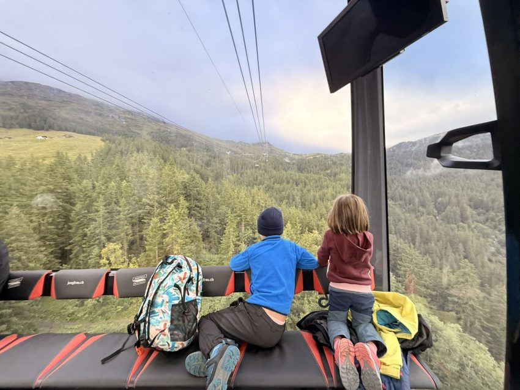
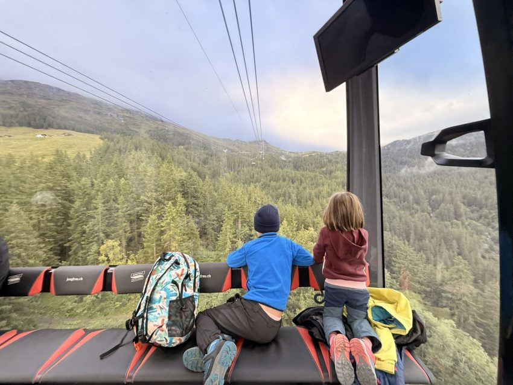

Detall 1 Suïssa
Idees, destinacions i consells per viatjar en família!
Idees, destinacions i consells per viatjar en família!

Una de les experiències més inoblidables que pots viure als Alps suïssos és, sense dubte, pujar a l’estació de tren més alta d’Europa: la Jungfraujoch, coneguda també com “Top of Europe”. Situada a 3.454 metres d’altitud, aquesta estació no només és una fita d’enginyeria que es va acabar de construir el 1912, sinó també una porta d’accés a alguns dels paisatges alpins més espectaculars d’Europa. Us expliquem com s’hi arriba, què s’hi pot fer a dalt i alguns consells pràctics per anar-hi en família.
Una vegada arribes a l’estació, hi ha un recorregut circular amb diferents propostes. Es pot fer sencer en una hora i mitja- dues hores, per si voleu calcular el temps per la baixada (hi podeu afegir l’estona d’esbarjo que vulgueu). Perquè us en feu una idea, noslatres vam arribar cap a les 10 del matí i cap a les 14h ja baixàvem. A diferència d’altres estacions de tren suïsses, aquí dalt no hi ha hotel i no s’hi pot dormir.
Un dels punts més emblemàtics és l’Observatori Sphinx, accessible amb un ascensor d’alta velocitat. Des d’aquesta plataforma exterior es pot contemplar una vista panoràmica de l’Aletschgletscher, el glaciar més llarg d’Europa de 23 quilòmetres de llargada, i dels cims com el Mönch i el Jungfrau. Aquí dalt hi ha un observatori astronòmic.
 
